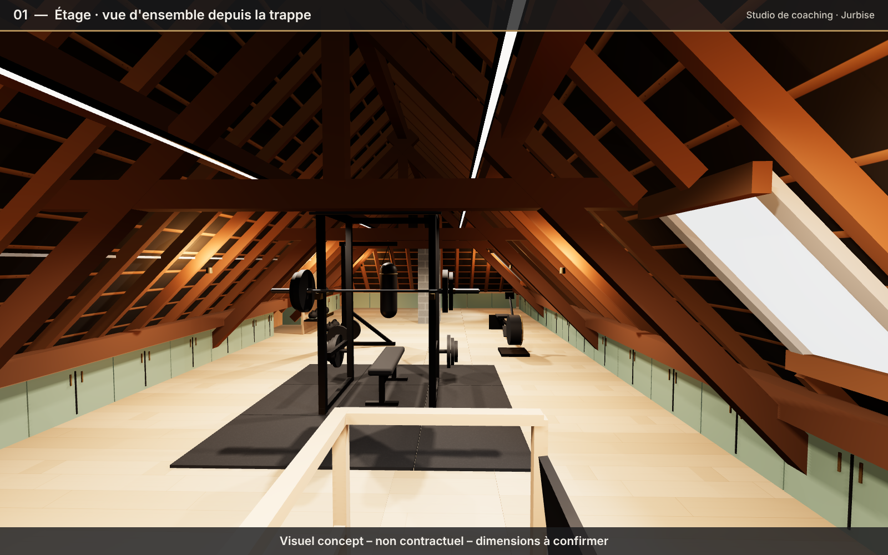
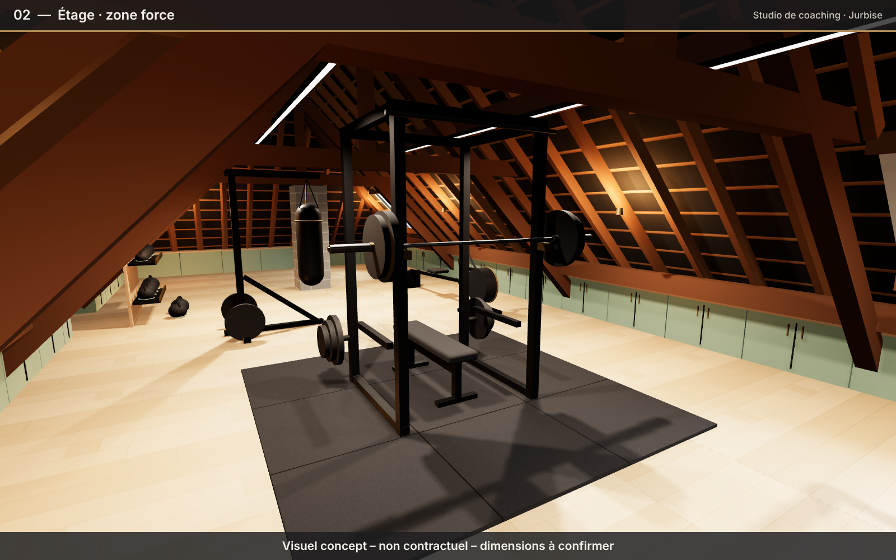
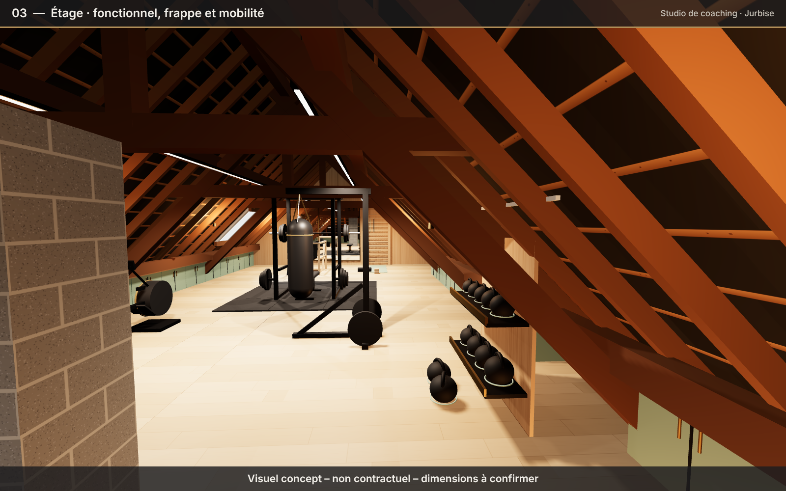
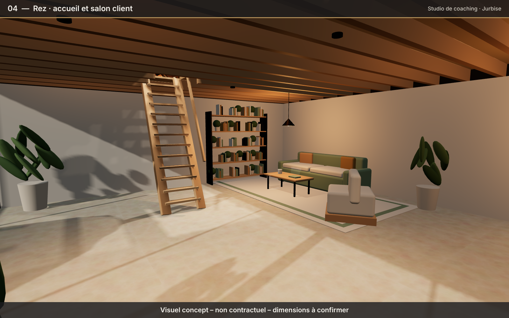
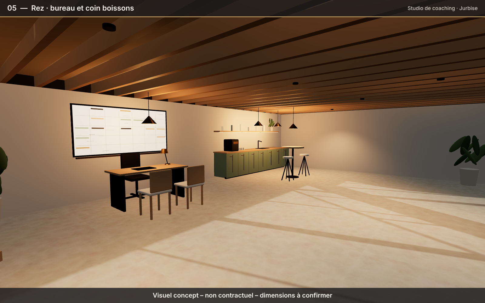
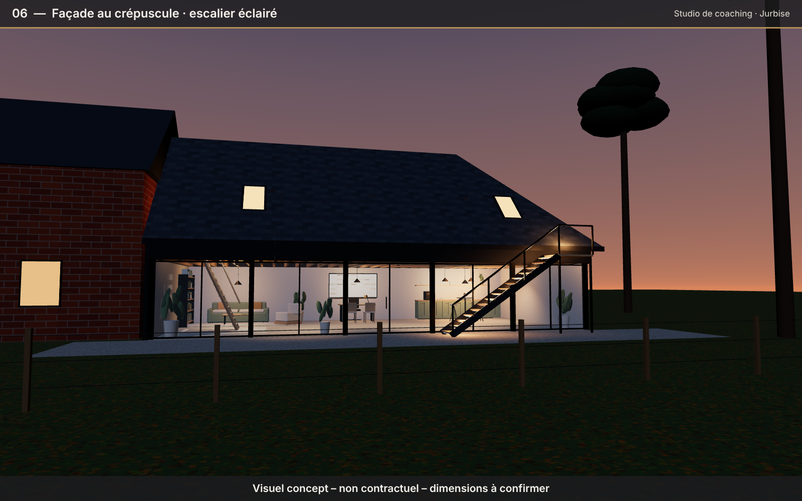
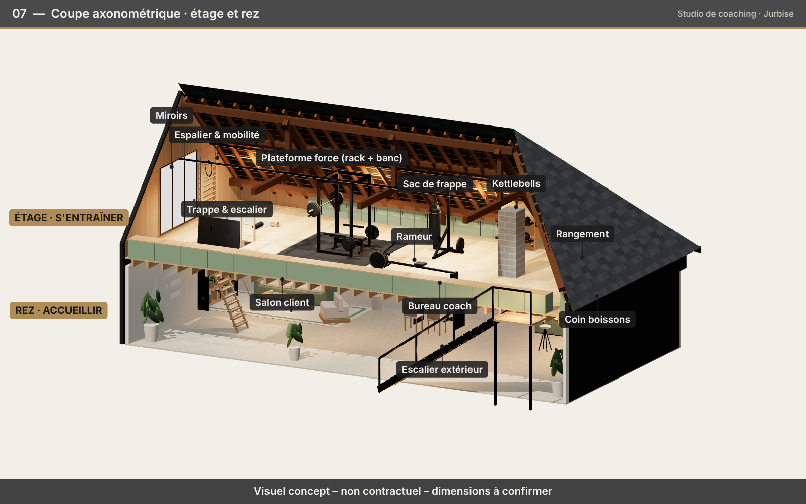

Studio de coaching – Jurbise
Un étage qui entraîne, un rez qui accueille. Maquette 3D concept en 7 vues.
Visuel concept – non contractuel – dimensions à confirmer. Aucune mesure n'a été prise. Les proportions sont estimées à partir des photos.

01Étage · vue d'ensemble depuis la trappeCharpente existante conservée, rampes LED 4000 K, accents chauds sur les chevrons.

02Étage · zone forceRack et banc sur dalles caoutchouc noires, placé entre deux fermes.

03Étage · fonctionnel, frappe et mobilitéKettlebells, sac de frappe autoportant, espalier et miroirs sur le pignon.

04Rez · accueil et salon clientCanapé, table basse, étagère et plantes. Escalier existant de la trappe.

05Rez · bureau et coin boissonsTableau de programmes, plan de travail, évier et machine à café. Lumière 2700–3000 K.

06Façade au crépuscule · escalier éclairéPoteaux existants, rez vitré (hypothèse), 2 Velux, clôture et pelouse.

07Coupe axonométrique · étage et rezZones nommées, sans cote.